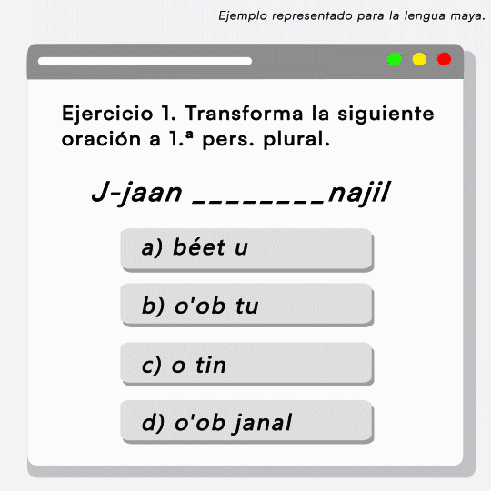

Los organizadores de AmericasNLP 2024 se complacen en anunciar que, en 2024, el certamen contará con dos tareas independientes sobre lenguas indígenas. La primera para la Traducción Automática y la segunda para la Creación de Materiales Educativos para Lenguas Indígenas en la cual se incluye por primera vez el Maya Yucateco.

Creación de Materiales Educativos para Lenguas Indígenas
La tarea compartida AmericasNLP 2024 sobre la creación de materiales educativos para lenguas indígenas es un concurso destinado a fomentar el desarrollo de sistemas de procesamiento del lenguaje natural (PLN) para ayudar con la enseñanza y difusión de las lenguas indígenas de las Américas. Los participantes construirán sistemas que puedan crear ejercicios automáticamente al convertir una oración base en otra oración que haya cambiado con respecto a una propiedad específica (como persona, negación o el tiempo). Los sistemas presentados a la tarea compartida se presentarán en el Cuarto Taller sobre PNL para Lenguas Indígenas de las Américas (AmericasNLP) en junio de 2024, que tendrá lugar junto con la Reunión Anual del Capítulo Norteamericano de la Asociación de Lingüística Computacional (NAACL 2024) y celebrado en la Ciudad de México.
¿Por qué?
Muchas de las lenguas indígenas de las Américas son vulnerables o están en peligro de extinción. Esto significa que pocos niños o ninguno las aprenden hoy en día y sólo las hablan grupos pequeños de personas. Debido a esto, estas lenguas corren un alto riesgo de extinción en un futuro próximo. Por este motivo, muchas comunidades están llevando a cabo esfuerzos de revitalización, incluida la enseñanza de sus idiomas a los miembros de su comunidad. Crear materiales para enseñar estos idiomas es una prioridad urgente, pero este proceso es costoso y requiere mucho tiempo. Así, El Procesamiento de Lenguaje Natural (PLN) presenta una oportunidad para ayudar con estos esfuerzos.
Además de estar en peligro de desaparición, la mayoría de las lenguas indígenas de las Américas son llamadas lenguas de bajos recursos puesto que hay un limitado volumen de datos necesarios para entrenar cualquier modelo de PNL, incluidos los modelos basados en el aprendizaje profundo. Esto significa que muchos enfoques utilizados para idiomas con altos recursos, como el inglés y el chino, no son directamente aplicables o funcionan mal.
Finalmente, muchas lenguas indígenas exhiben propiedades lingüísticas poco comunes entre las lenguas que se estudian con frecuencia en la PNL. Esto constituye una dificultad adicional. El objetivo de AmericasNLP es motivar a los investigadores a asumir el desafío de desarrollar sistemas para estas lenguas indígenas.
¿Cómo?
AmericasNLP invita a presentar resultados obtenidos por sistemas construidos para la creación de materiales educativos para lenguas indígenas. Los participantes pueden utilizar los datos de capacitación y desarrollo que proporcionamos y no hay límites sobre los recursos adicionales que los participantes pueden usar. Si los participantes quieren aprovechar datos adicionales para mejorar sus sistemas, ¡genial! Si quieren utilizar modelos previamente entrenados, ¡también es genial! La única limitación es que pedimos a los participantes que no creen los resultados de la prueba manualmente ni se capaciten en los conjuntos de desarrollo o prueba.
En esta tarea compartida, los participantes recibirán un conjunto de datos con oraciones base. El conjunto de datos también contendrá una indicación del cambio que esperamos que realicen los sistemas en cada oración base. Los sistemas transformarán la oración base en una oración objetivo según el cambio indicado.
Frase base: J-jaan en tin naajil (1s) (tr. del maya “Comí en mi casa.”)
Cambio esperado: 1a persona singular > 3a persona plural
Frase objetivo: J-jaano'ob tin naajil (3p) (tr. del maya “Comieron en mi casa.”)
La principal métrica de la tarea compartida es la precisión. Los participantes pueden participar en el concurso para tantos idiomas como quieran, y los sistemas para cada idioma se evaluarán por separado, además de la puntuación promedio general, que se utilizará para determinar el ganador de la tarea compartida. Proporcionamos un guión de evaluación y un sistema de referencia para ayudar a los participantes a comenzar rápidamente. Si estás interesado en esta tarea compartida, regístrate aquí: Google form


Los modelo se evaluarán en un conjunto de prueba para medir su rendimiento en datos no vistos durante el entrenamiento, utilizando la métrica. Si es necesario, se deben realizan ajustes adicionales para mejorar el rendimiento.
¿Qué idiomas?
Los siguientes idiomas aparecen en la tarea sobre la creación de materiales educativos para lenguas indígenas (AmericasNLP 2024 Shared Task 2):
- Bribri de Costa Rica
- Guaraní de Paraguay
- Maya Yucateco de México
Fechas importantes
- Liberación de datos piloto: 29 de enero 2024
- Liberación de datos de entrenamiento y dev: 5 de febrero 2024
- Publicación de sistemas baseline y resultados: 12 de febrero 2024
- Liberación de datos para test: 1 de abril 2024
- Envío de resultados de los sistemas (shared task deadline): 10 de abril 2024
- Anuncio de los ganadores: 12 de abril 2024
- Envío de artículos de descripción de los sistemas: 19 de april 2024
- Notificación de aceptación: 22 de april 2024
- Entrega de trabajos listos para publicación: 6 de abril 2024
Organizadores
Manuel Mager, Pavel Denisov, Silvia Fernandez Sabido, Samuel Canul Yah, Alejandro Molina-Villegas, Lorena Hau Ucán, Arturo Oncevay, Rolando Coto-Solano, Luis Chiruzzo, Marvin Agüero-Torales, Aldo Alvarez, Katharina von der Wense.
- Contacto: americas.nlp.workshop@gmail.com
Acerca de los datos en Maya
La base de datos que se proporciona es un trabajo colaborativo entre el Centro de Investigación de Ciencias de Información Geoespacial (CentroGEO) y las Secretaria de la Cultura y las Artes de Yucatán (SEDECULTA). Los autores de esta información que se proporciona son: Alejandro Molina-Villegas (CONAHCYT - CentroGeo), Silvia Fernandez Sabido (CONAHCYT - CentroGeo), María Elisa Chavarrea Chim (SEDECULTA), Samuel Canul Yah (SEDECULTA), Sary Lorena Hau Ucan (SEDECULTA), Daniela Esther Cano Chan (Becaria), Alejandra del Rocío Moo Batun (Becaria) y Gregorio Hau Caamal (Becario).